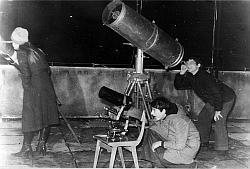
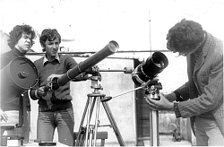
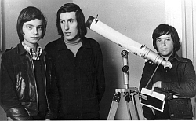
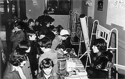
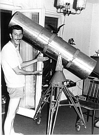
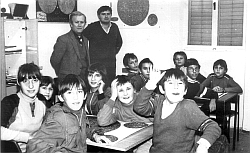

Astronomical Society "ISTRA" Pula
History, mission and activities of the Society
The Astronomical Society "Istra" was founded on 27 December 1973 at the initiative of interested citizens and school students. The most important task of the Society was, and remains to this day, the popularization of astronomy.
As the Society had no premises of its own, the first observations of celestial bodies for members and the public were held on a terrace at 10 Lenjinova Street (now Flanatička Street). Immediately after its founding, the Society became a member of Narodna tehnika Pula (now the Community of Technical Culture of the City of Pula), so meetings and occasional lectures were held on its premises.
To promote the Society and attract new members, telescopes were occasionally set up on the city promenades, while sections were founded in schools to attract young students. At that time, because telescopes were hard to come by, a great deal of effort also went into building them ourselves.






Restoration of the Observatory
The key moment in the development of the Society came in 1979, when it was given the use of the remaining part of the former Austrian Naval Observatory in Monte Zaro Park (then Ruđer Bošković Park). As the building was badly neglected, a campaign to restore it was launched at once.
With the help of the aforementioned company, the main dome was restored only in the first half of 1999 - unfortunately on a smaller scale than planned, but even that was a big step for Pula's astronomers.
The next phase of restoration began in 2006 when, with financial support from the city authorities, the flat roof over the classroom and lecture hall was renovated at the last minute and at the same time converted into a terrace for summer observations and lectures.
Set in one of the most beautiful spots in Pula, just a stone's throw from the city centre, with a view over Pula bay and harbour, the old Pula Observatory deserves a complete restoration, so that - worthy of the scientific discoveries made from it - its appearance and facilities may enrich the historical and cultural heritage of our three-thousand-year-old city.
Although today's Pula Observatory has neither the significance nor the role of its predecessor in the second half of the 19th century, when, under the double-headed eagle of the vanished Austro-Hungarian Monarchy, it was one of the places where the torch of science burned, the two are bound by a thread of historical continuity. If nothing else, now as in the days of our illustrious predecessors, the same ground lies beneath us and the same stars shine above us.
Instruments
At the end of 2006, a "Celestron 11 CGE" catadioptric telescope with an 11-inch aperture and a focal length of almost 3000 mm (F10) was installed in the four-metre dome of the Pula Observatory, replacing the "Celestron 8" telescope bought back in 1975, which had faithfully served Pula's astronomers until then.
In addition to these two telescopes, the Observatory has several smaller portable telescopes with apertures of 200, 100, 90, 80, 70 and 50 mm, binoculars, as well as a variety of telephoto lenses and filters and other, mostly electronic, equipment.
Additional information about the Astronomical Society "Istra" Pula
Registered office:
Glavinićev uspon 1. 52100 Pula
tel. (052) 210-436
Observatory:
Park Monte Zaro 2, 52100 Pula
tel. +385 91 214 1966
OIB (tax ID): 06977689451
MB (registration no.): 3232883
Association registry number: 18000627
Bank account: OTP banka d.o.o. Zadar: 2407000-1118025486
IBAN: HR4124070001118025486